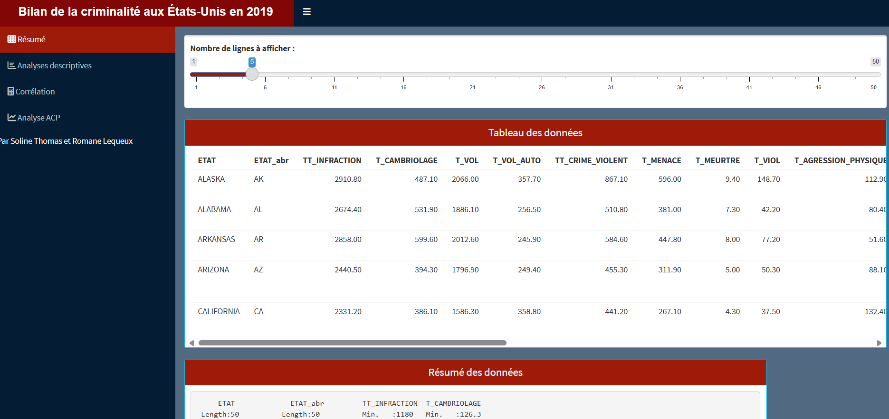
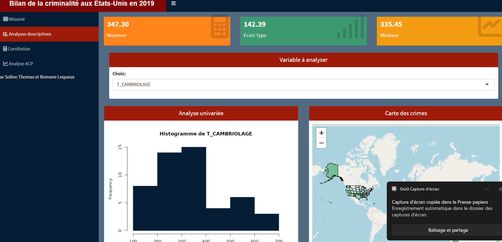
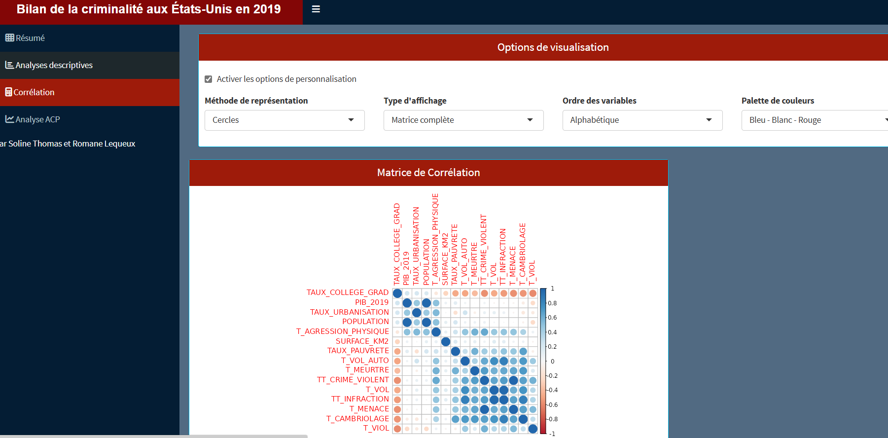
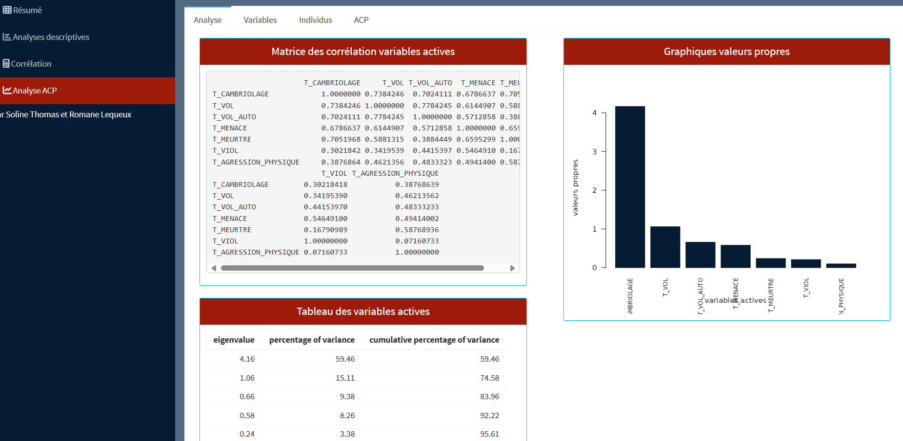

Compétence principale mobilisée :Analyser statistiquement des données
Dans ce projet, j’ai développé une application R-Shiny dans le cadre de la SAÉ sur le reporting automatisé et l’analyse exploratoire multivariée. L’objectif était de proposer une solution interactive et complète permettant de mieux comprendre les facteurs liés à la criminalité aux États-Unis en 2019, en mettant en œuvre une analyse en composantes principales (ACP).
L’application se compose de quatre onglets principaux, chacun permettant une étape spécifique d’analyse statistique :
Vue d’ensemble du jeu de données : structure, variables, nombre d’observations, etc.
Analyse univariée (distribution d’une variable) avec quelques indicateurs comme la moyenne, l'écart type et la médiane ou encore la distribution de la variable géographiquement et bivariée (relation entre deux variables au choix).
Visualisation des corrélations entre variables avec la possibilité de filtrer dynamiquement.
Analyse complète de l’ACP : axes, variables, individus, cos², contributions, etc.
